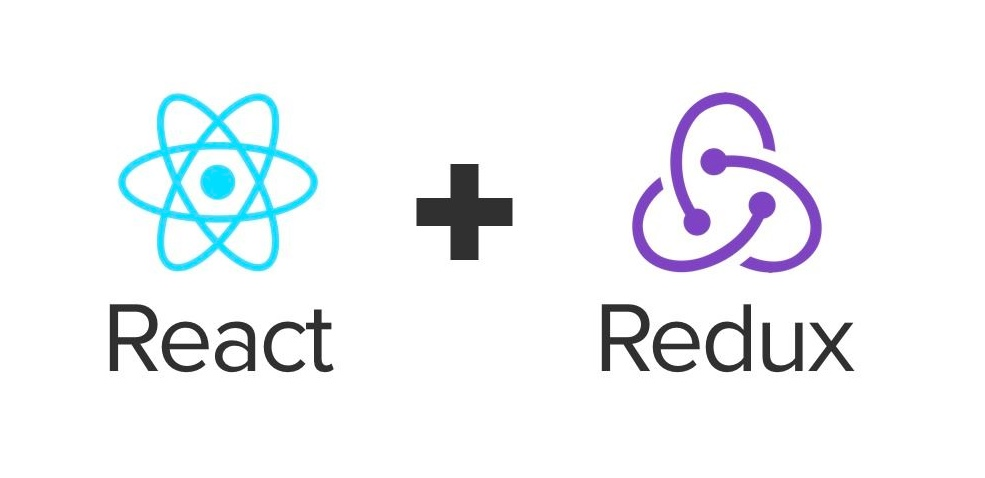

React Redux
Outline
- What is react and redux
- How data flows from backend to react UI
- Type of state
- Debugging tips
What is react

Possible answer
- UI library
- Javascript Framework
- Open source project
- Virtual DOM
- Component based framework
- JSX
Might be
const react = props: UI => render(props);
const reactDOM = reactElement: DOM => renderToBrowser(reactElement);
const reactNative = reactElement: iOS hierarchy => renderToIOS(reactElement);
Summary
- Write UI with component
- Declarative way to write UI
- Manage UI state by state or props
- Collect user input and manage it by state
- Update UI when state change
What is redux and why
Cross component communication

How data flows inside redux
Different part of redux
- action(domain/event, todos/created)
- reducer
- selector
- middleware(redux-thunk)
React state vs redux
- Any other component care about this state?
- Do you want to cache the data?
How to split slice for redux
- Split by domain(global level)
- Split by components
Testing redux
- Pure function
- Composable selector
State from end to end
render -> fetch -> store response -> trigger UI update
Type of the state
- state from backend
- state that redux needed
- state for component(useSelector)
- state inside component
Type of the state
- business/domain level
- UI level
Debugging Tips
DevTool
Split the program into smaller pieces
- React Component Props
- Redux actions and payload
- Redux state diff
- Backend Data(Chrome devtool network panel)